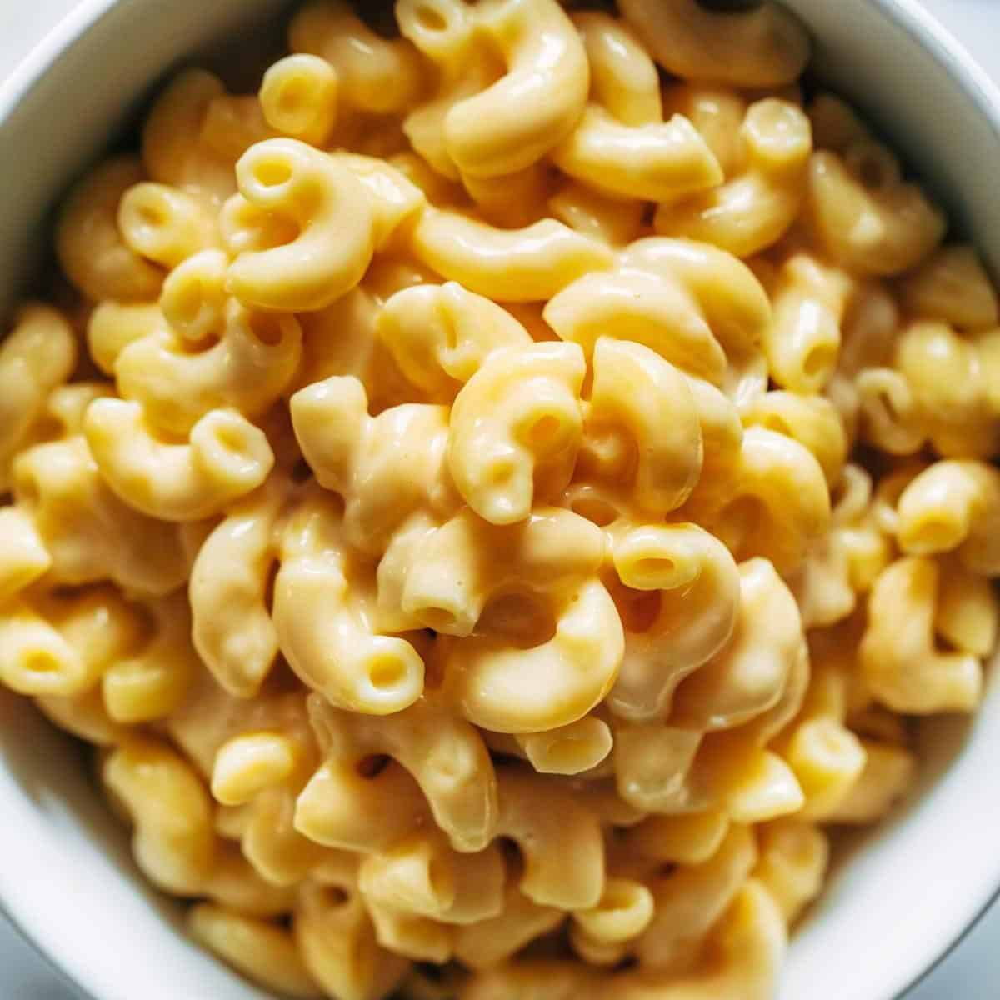

Mac 'n' Cheese

Description:
This is a recipe for the classic dish that consists of maccaroni and cheese, or mac 'n' cheese for short.
It tastes good, it feels good, it smells good, and it feeds good.
Go ahead and give this dish a try!
Ingredients:
- 8 ounces uncooked elbow maccaroni
- 2 cups shredded sharp Cheddar cheese
- 1/2 cup grated Parmesan cheese
- 3 cups milk
- 1/4 cup butter
- 2 1/2 tablespoons all-purpose flour
- 2 tablespoons butter
- 1/2 cup bread crumbs
- 1 pinch paprika
Steps:
- Cook macaroni according to the package directions. Drain.
- In a saucepan, melt butter or margarine over medium heat. Stir in enough flour to make a roux. Add milk to roux slowly, stirring constantly. Stir in cheeses, and cook over low heat until cheese is melted and the sauce is a little thick. Put macaroni in large casserole dish, and pour sauce over macaroni. Stir well.
- Melt butter or margarine in a skillet over medium heat. Add breadcrumbs and brown. Spread over the macaroni and cheese to cover. Sprinkle with a little paprika.
- Bake at 350 degrees F (175 degrees C) for 30 minutes. Serve.